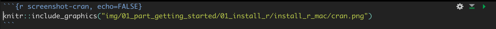
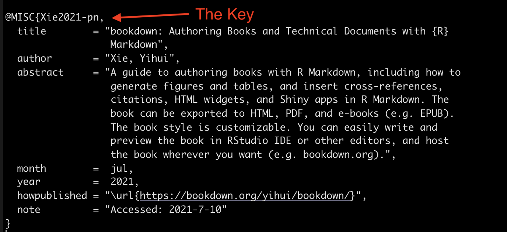

11 Bookdown: Creating Book Chapters
Chapters should pretty much just be about one distinct idea. Give some more thought to defining this more clearly. I think it will be important as I start incorporating the epidemiology stuff. Also, it should help with making things easier to find.
Heading guidelines: * Useful for finding what you are looking for.
11.1 Chapter overview
Very brief description of what they can expect.
By the end of this chapter, we will be able to: 1. Placeholder 2. Placeholder
- Awesome if you can start with a funny picture or a cool quote.
11.2 Motivating example
Recall that one of my [goals][Goals] is “To start each concept with the end result and then deconstruct how we arrived at that result, where possible. I find that it is easier for me to understand new concepts when learning them as a component of a final product.”
We won’t necessarily do this for every chapter (e.g., installing R and RStudio) if doing so doesn’t make sense.
11.3 Body
11.3.1 Language
Use “we” and “our” language. Make it friendly and informal.
11.3.2 Text conventions
- Bold text is used to highlight important terms, file names, and file extensions.
- Not every bolded term needs to go in the glossary. Use your best judgment.
Highlighted inline codeis used to emphasize small sections of R code and program elements such as variable or function names.
11.3.3 Special sections
<p class="note"> 🗒**Side Note:** This is an example note. </p>🗒Side Note: This is an example note.
<p class="warning"> ⚠️**Warning:** This is an example warning </p>⚠️Warning: This is an example warning
11.3.4 Images

Don’t forget to add “echo=FALSE” to the code chunk.
Details on cross-referencing figures are given below.
Every figure doesn’t need a caption. It can actually make things look sloppy. The only figures that NEED a caption are those figures that are cross-referenced.
Because of the way the files are structured, You won’t be able to see pictures directly in the Rmd files without including “../../” on the front the file paths. However, having “../../” on the front of the file paths prevents the book from building appropriately.
You can also directly use img tags. Here’s the one I used for my photo in R4Epi
<!-- Cannell profile photo -->
<img align="right" src="img/index/cannell-headshot copy.png" alt="R4Epi hex logo" width="250" style="margin: 0 1em 0 1em; border-radius: 20px 0px 20px 0px;">Yihui talks about some of the advantages of using knitr::include_graphics() here: https://bookdown.org/yihui/bookdown/figures.html. Most of them have to do with creating PDF documents. For HTML only, the img tag seems to be a little more customizable.
11.3.5 Videos
You can include videos published on either YouTube or Vimeo within a chapter using the standard Markdown image syntax. Note that any valid YouTube or Vimeo URL will work.
Note: You must use YouTube’s embed code for the video to work. Simply adding  will not work as some websites claim. Instead, on YouTube, you need to click share, then click the Embed button, then copy the iframe code. For example, this code
<iframe width="560" height="315" src="https://www.youtube.com/embed/RiAeNSFjjLc" title="YouTube video player" frameborder="0" allow="accelerometer; autoplay; clipboard-write; encrypted-media; gyroscope; picture-in-picture" allowfullscreen></iframe>produces:
11.3.6 Font Awesome
There are few different ways to incorporate font awesome icons into your output. The font awesome package (https://github.com/rstudio/fontawesome) is my favorite so far. Here are the social media links I added to R4Epi:
**Contact**
Connect with Dr. Cannell and follow his work.
<a href="https://www.bradcannell.com" target="_blank">`r fa("globe", fill = "#003087", height="2em")`</a>
<a href="https://www.facebook.com/Brad-Cannell-PhD-MPH-109345984850672" target="_blank">`r fa("facebook-square", fill = "#4267B2", height="2em")`</a>
<a href="https://www.linkedin.com/in/bradcannell/" target="_blank">`r fa("linkedin", fill = "#2867B2", height="2em")`</a>
<a href="https://twitter.com/brad_cannell" target="_blank">`r fa("twitter-square", fill = "#198CD8", height="2em")`</a>
<a href="https://www.instagram.com/brad_cannell/" target="_blank">`r fa("instagram-square", fill = "#833AB4", height="2em")`</a>11.3.7 Links
You can use standard markdown syntax for links: [Visible text](link_to_somewhere). Or you can use anchor tags. Anchor tags seem to be the only way to open links in a new tab (https://stackoverflow.com/questions/4425198/can-i-create-links-with-target-blank-in-markdown). See the social media icons above for an example.
11.3.8 Code blocks
Add the following below code blocks…
👆Here’s what we did above:
Use unordered lists for these sections. It allows for nested lists and code. Add line breaks in between the bullets.
<ul>
<li>You can type `?mutate` into your R console to view the help documentation for this function and follow along with the explanation below./li>
<li></li>
<li></li>
</ul>11.4 Cross-references
11.4.1 Cross-referencing figures
To cross-reference figures:
- Label the code chunk that contains the figure (e.g.,
{r label, echo=FALSE}).
- Give the code chunk that contains the figure a caption (e.g.,
{r label, echo=FALSE, fig.cap="Some text."})) - Then add
\@ref(fig:exampe-bookdown-img)to the text where you want to cross-reference the figure.
⚠️Warning: The figure reference must go outside of punctuation. With a space.
⚠️Warning: If you want to cross-reference figures or tables generated from a code chunk, please make sure the chunk label only contains alphanumeric characters (a-z, A-Z, 0-9), slashes (/), or dashes (-).
⚠️Warning: If you want to cross-reference figures or tables generated from a code chunk, you must give the code chunk a caption.
Example:
- The sentence below is written as “As seen in the figure below.
\@ref(fig:paperpile)”
- As seen in the figure below. 11.1
11.4.2 Cross-referencing chapters
There are a couple different ways you can cross-reference other chapters or other sections of the book. This is adapted from Jenny Bryan’s Happy Git and GitHub for the useR book.
11.4.2.1 Method 1.
You can add a CSS id the behind the header using a hashtag inside curly braces (i.e., {#id}). Later, you can reference that section by writing the hash id inside parentheses (i.e., [some text to link](#id)).
Method 1 is a good method when the section name is difficult or unwieldy to write out. It may also just be a good idea when you know ahead of time that you will want to cross-reference a section.
Example:
- I added the CSS id
{#cr-figs}to the section above called “Cross-referencing figures”.
- The sentence below is written as “
See the section above on [cross-referencing figures](#cr-figs)”.
- See the section above on cross-referencing figures.
11.4.2.2 Method 2
You can add a CSS id the behind the header using a hashtag inside curly braces (i.e., {#id}). Later, you can use the \@ref(#id) format to make the cross-reference appear as a linked chapter/section number rather than linked text.
Method 1 & 2 are good methods when the section name is difficult or unwieldy to write out. They may also just be a good idea when you know ahead of time that you will want to cross-reference a section. The difference is really just a matter of style.
Example:
- I added the CSS id
{#cr-figs}to the section above called “Cross-referencing figures”.
- The sentence below is written as “
See the section \@ref(cr-figs) above about cross-referencing figures.”.
- See the section 11.4.1 above about cross-referencing figures.
- Notice that I did NOT include the hashtag symbol when referencing the section.
11.4.2.3 Method 3
Simply write out the chapter/section header name inside square brackets (i.e., [Section header name] to create a text link to the chapter/section header.
Example:
- This section is titled “Cross-references”.
- The sentence below is written as “
See the [cross-references] section above.”.
- See the cross-references section above.
⚠️Warning: When using the chapter/section name inside square brackets, make sure to replace spaces with dashes (-).
11.4.2.4 Method 4
Write out some text that you want linked to the chapter/section header inside of square brackets, then immediately follow it with the chapter/section header name inside square brackets (i.e., [linked text][Section header name] to create a text link to the chapter/section header.
Example:
- This section is titled “Cross-references”.
- The sentence below is written as “
See the [section above on cross-referencing][Cross-references]”.
- See the section above on cross-referencing.
11.5 Citations
For more details, see Yihui Xie’s Bookdown book.
- Add whatever you want to cite to Paperpile.
- Navigate to Paperpile.
- Click on the document/article you want to cite.
- Click the drop-down arrow next to the “Cite” button.
- Click the BibTeX option. This will copy a BibTeX citation to your clipboard.
Figure 11.1: A screenshot of selecting BibTex in PaperPile.
- In RStudio, open
book.bib, which should be in your book’s root directory.
- Paste the BibTeX citation into
book.bib. Order the citations alphabetically by author’s last name. Save.
For example, here is the book.bib entry for the Yihui Xie’s bookdown book:

Then, to cite that book, type @key where you want the citation to appear – the key part of @key is marked in the example above. So, I’m citing Yihui Xie’s bookdown book at the end of this sentence by typing @Xie2021-pn after the period with a space in between.3
🗒Side Note: You can change the citation style using the csl: parameter in index.Rmd. I typically use csl: ama.csl, but you can download other formats from https://github.com/citation-style-language/styles.
11.6 Previewing the chapter
- Supposed to use “bookdown::preview_chapter(”03_what_is_r.Rmd”)” to preview chapters.
- I can’t get this to work for some reason. I created a new project that I can use a test environment.
- It’s in “R4Epi chapters in progress/bookdown_test_environment”. You have to build the whole book, but it should go fast because I don’t have all the chapters.
11.6.1 Miscelaneous
- Make liberal use of emojis.
- Start making videos to supplement content.
11.7 Additional resources: function to check
Links to cheat sheets, websites, and videos.
11.8 Key terms : function to add to appendix
Key terms covered in this chapter.
11.9 Final example code : function to add to appendix
Succinct recap of the code used in this chapter without any explanation of how it works. You can use this as a quick reference later.
We won’t necessarily do this for every chapter (e.g., installing R and RStudio) if doing so doesn’t make sense.